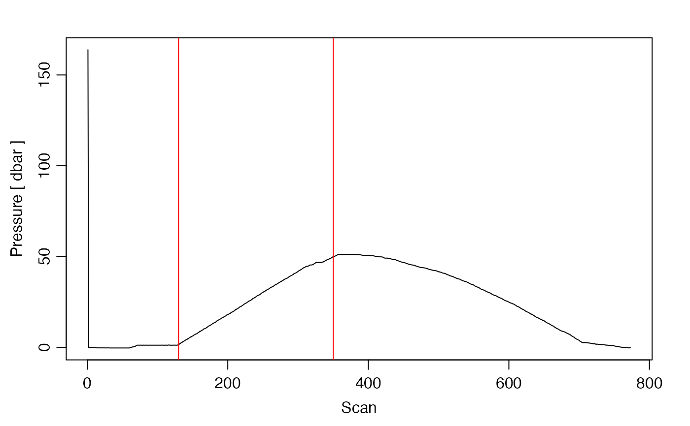

Plot CTD data as time-series against scan number, to help with trimming extraneous data from a CTD cast.
plotScan( x, which = 1, xtype = "scan", flipy = FALSE, type = "l", mgp = getOption("oceMgp"), xlim = NULL, ylim = NULL, mar = c(mgp[1] + 1.5, mgp[1] + 1.5, mgp[1], mgp[1]), ..., debug = getOption("oceDebug") )
| x | a ctd object. |
|---|---|
| which | Numerical vector numerical codes specifying the panels to draw: 1
for pressure vs scan, 2 for |
| xtype | Character string indicating variable for the x axis. May be
|
| flipy | Logical value, ignored unless |
| type | Character indicating the line type, as for |
| mgp | Three-element numerical vector to use for par |
| xlim | Limits on the x value. The default, |
| ylim | Limits on the y value. The default, |
| mar | Four-element vector be used with par |
| ... | Optional arguments passed to plotting functions. |
| debug | an integer specifying whether debugging information is
to be printed during the processing. This is a general parameter that
is used by many |
Other functions that plot oce data:
plot,adp-method,
plot,adv-method,
plot,amsr-method,
plot,argo-method,
plot,bremen-method,
plot,cm-method,
plot,coastline-method,
plot,ctd-method,
plot,gps-method,
plot,ladp-method,
plot,landsat-method,
plot,lisst-method,
plot,lobo-method,
plot,met-method,
plot,odf-method,
plot,rsk-method,
plot,satellite-method,
plot,sealevel-method,
plot,section-method,
plot,tidem-method,
plot,topo-method,
plot,windrose-method,
plot,xbt-method,
plotProfile(),
plotTS(),
tidem-class
Other things related to ctd data:
CTD_BCD2014666_008_1_DN.ODF.gz,
[[,ctd-method,
[[<-,ctd-method,
as.ctd(),
cnvName2oceName(),
ctd-class,
ctd.cnv,
ctdDecimate(),
ctdFindProfiles(),
ctdRaw,
ctdTrim(),
ctd,
d200321-001.ctd,
d201211_0011.cnv,
handleFlags,ctd-method,
initialize,ctd-method,
initializeFlagScheme,ctd-method,
oceNames2whpNames(),
oceUnits2whpUnits(),
plot,ctd-method,
plotProfile(),
plotTS(),
read.ctd.itp(),
read.ctd.odf(),
read.ctd.odv(),
read.ctd.sbe(),
read.ctd.woce.other(),
read.ctd.woce(),
read.ctd(),
setFlags,ctd-method,
subset,ctd-method,
summary,ctd-method,
woceNames2oceNames(),
woceUnit2oceUnit(),
write.ctd()
